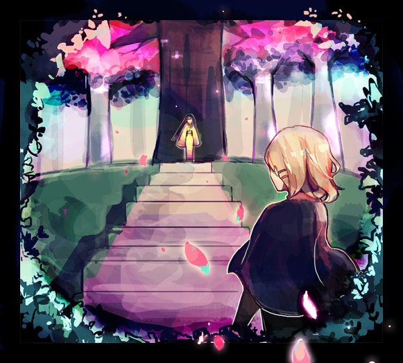
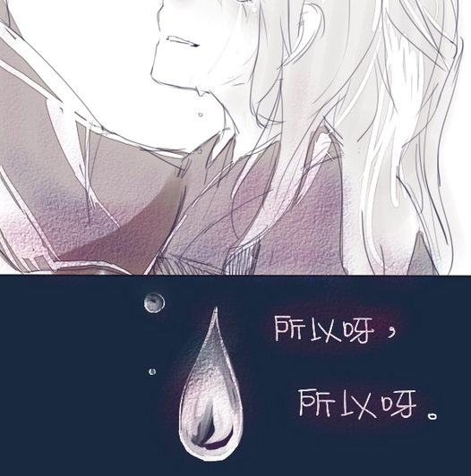
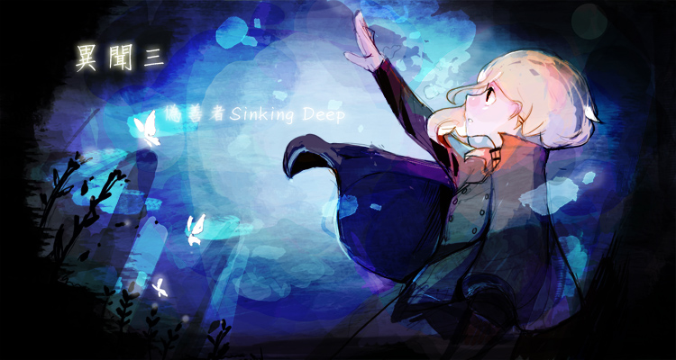

-
六六夜《緣起緣滅》2022-05-14
 ──過去吧，此次你有能力前往任何地方。
──過去吧，此次你有能力前往任何地方。
那位大人還未墮落前，也曾有過這樣的事哪。宵闇異聞 無生 -
《荼蘼花開》2022-05-11
※ 六五夜《所愛之物》 斷簡殘篇
※ 麗子中心宵闇異聞 -
六五夜《所愛之物》2022-05-05
 連喜愛什麼、所愛之物是什麼都不知道，
連喜愛什麼、所愛之物是什麼都不知道，
那一定是因為──
你所愛的只有你自己吧。宵闇異聞 文屋千蒔 無生 -
異聞一（完）櫻吹雪2015-03-09

一棵樹在森林中倒下，卻沒有人聽見。
——那麼、這棵樹是否存在呢？宵闇異聞 -
五ノ夜（下）留下的2015-02-13

自以為給了對方最想要的，自以為給了對方最好的。
但是呀，可是呀。
——究竟是誰來評定這才是幸福的呢？宵闇異聞 -
五ノ夜（上）留下的2015-02-07
 沒有人知道女人從何而來，也沒有人見過其真面目。
沒有人知道女人從何而來，也沒有人見過其真面目。
……只有這個日落時分會傳出的淒厲哭泣聲，在這條街的人們口中相傳。
——埋在牆裡的秘密。宵闇異聞 -
三ノ夜（上）墨田川的河童2015-01-17

多數人歌詠，謊言也能成為事實。
——吶、誰比較可怕呢？宵闇異聞 -
三ノ夜（下）墨田川的河童2015-01-17
每個人眼中的世界都不同。
但這些不同的世界……太擠了。宵闇異聞 -
二ノ夜（下）迷子2015-01-09
 「……有名字的哦，前輩。」
宵闇異聞
「……有名字的哦，前輩。」
宵闇異聞 -
二ノ夜（上）迷子2015-01-02
 「人類會經歷兩次死亡，一次在爾等呼息停止之時。」
「人類會經歷兩次死亡，一次在爾等呼息停止之時。」
——而第二次……宵闇異聞